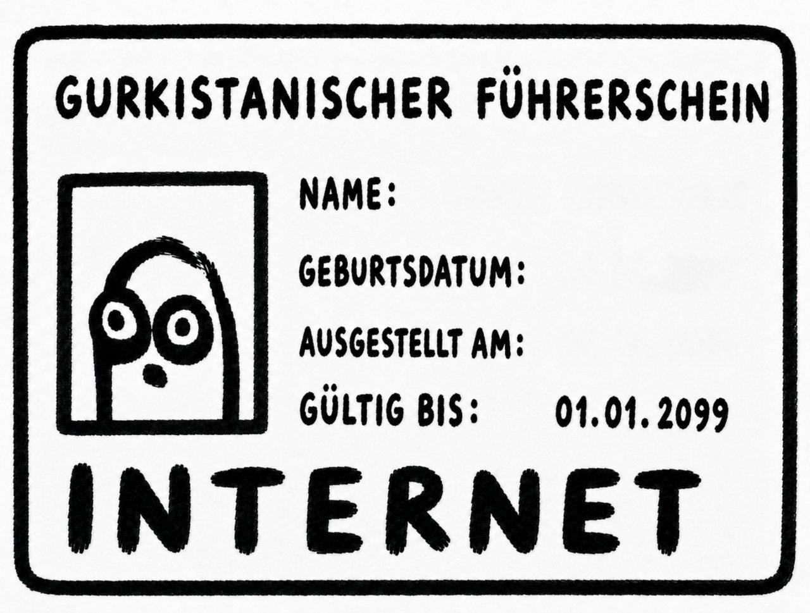
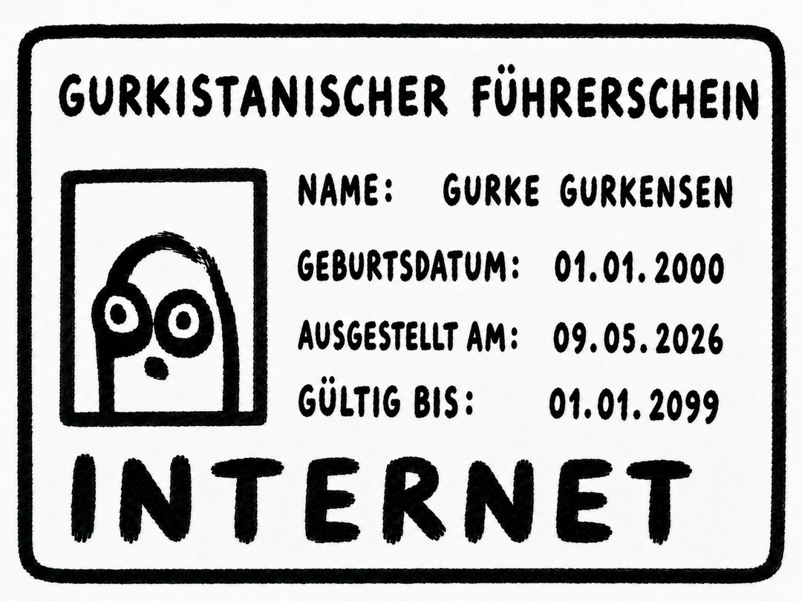
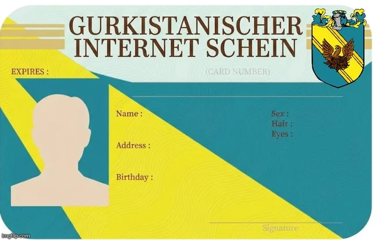

Gurkistan Generator
Über den Gurkistanischen Internetschein
Das hier ist ein kleiner Meme-Generator für einen eigenen gurkistanischen Internetführerschein bzw. Internetschein.
Man kann eine Vorlage auswählen, eigene Daten eintragen, ein Profilbild hochladen und das fertige Bild direkt als PNG herunterladen. Alles läuft nur im Browser. Es gibt kein Backend und es werden keine Daten gespeichert.
Vorlagen
Aktuell gibt es zwei Vorlagen. Bei der ersten Vorlage gibt es zusätzlich noch das Originalbild zum Vergleichen.



Woher die Idee kam
Die Idee kam durch diesen YouTube Short:
https://www.youtube.com/shorts/iJme3FOMCnQ
Die zwei aktuellen Vorlagen kommen aus r/gurkistan:
Who am I?
Ich bin Sic4rioDragon und komme aus der kleinen Ecke Internet, in der man dumme Ideen viel zu ernst nimmt und dann doch irgendwie als Webseite baut.
Ich bin schon seit einigen Jahren Fan von plankton, deswegen fand ich die Idee mit dem Internetschein einfach zu gut, um daraus nicht eine kleine Generator-Seite zu erstellen.
Mehr über mich und meine anderen Projekte findet man auf sic4riodragon.uk . Die Hauptseite wird aktuell noch überarbeitet, also nicht wundern, wenn dort noch nicht alles fertig ist.